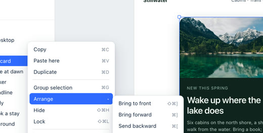

Search mail⌘K
Important8Other24Calendar2

Mei Lin9:12
DesignNotes from Tuesday’s crit
@you can you take the empty states before we ship? Screens attached.

empty-states.fig
Anika Rao8:47
LaunchVenue for the offsite
Two options left, both near the station. Can you pick one by Friday?

Jonas WeberYesterday
FinanceRe: the April numbers
Thanks, that matches what finance sent over this morning.
GH
GitHubYesterday
[relay/web] Release 4.2 is out
12 pull requests merged, 3 contributors. See what changed.

Amara OseiTue
HiringPortfolio review, Thursday 3pm
I’ve put the three finalists in a doc, with notes from the first round.

Theo LambertTue
DesignOnboarding copy, second pass
Shorter everywhere; the welcome screen is down to two lines.
S
StripeMon
Your payout of $4,120.00 is on its way
Expected in your account on 7 November.
Notes from Tuesday’s crit
Mei Linto Design teamToday, 9:12Hi all, thanks for a sharp crit. The flows hold up; the gaps are where nothing has happened yet.
@you can you take the empty states before we ship? The inbox, the search with no results, and the first project. I’ve put my rough screens in the file.
Theo is on the onboarding copy; I’ll pick up the error toasts.
empty-states.figPlate file · 3 frames
crit-notes.pdfPDF · 2 pages
 Reply to Mei…R
Reply to Mei…R